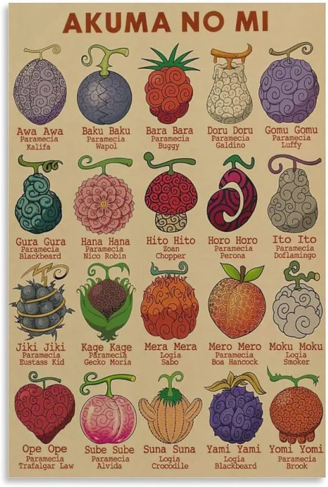
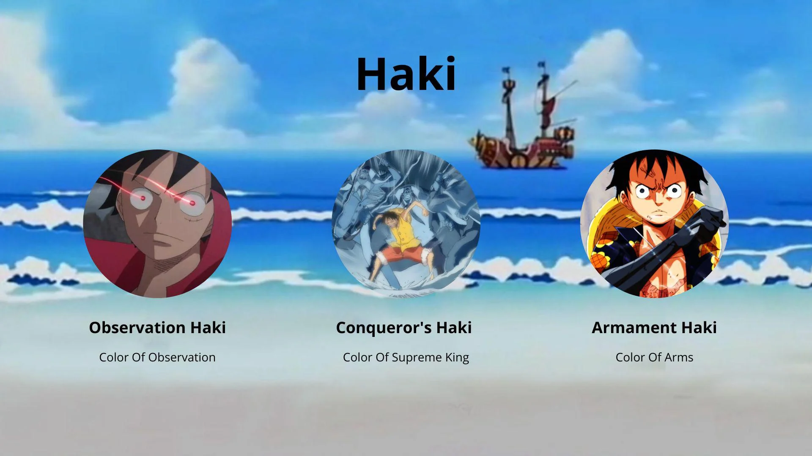

The Powers of One Piece
In the world of One Piece, power comes in many forms. From mystical fruits that grant supernatural abilities to advanced combat techniques, these forces shape the battles and destinies of pirates and marines alike. Here’s a breakdown of the key power systems in the series
Devil Fruits
Devil Fruits are rare and mysterious fruits that grant users unique abilities at the cost of their ability to swim. These powers vary widely, from altering the user’s body to controlling natural elements or transforming into powerful beasts. Some Devil Fruits offer devastating offensive abilities, while others provide more strategic or bizarre enhancements. Despite their immense power, mastering a Devil Fruit often requires skill, creativity, and extensive training.
- Paramecia: The most common type, granting a variety of abilities such as Luffy’s rubber-like body (Gomu Gomu no Mi) and Law’s ability to manipulate space (Ope Ope no Mi).
- Zoan: Grants the user the ability to transform into an animal or hybrid form. Some, like the Mythical Zoan, allow transformations into legendary creatures (e.g., Kaido’s dragon form).
- Logia: The rarest and most powerful, allowing the user to become and control a natural element like fire, lightning, or darkness (e.g., Ace’s Mera Mera no Mi).
Haki
Haki is an innate spiritual power that anyone can awaken and train, though few master its full potential. It allows users to sense their surroundings, enhance their attacks, and even dominate the will of others. Unlike Devil Fruits, which grant unique abilities, Haki is a skill that can be learned by anyone willing to develop their fighting spirit.
- Observation Haki (Kenbunshoku Haki): Grants enhanced perception, the ability to sense emotions, and even foresee attacks.
- Armament Haki (Busoshoku Haki): Creates an invisible armor and allows the user to bypass Devil Fruit defenses. Advanced users can even destroy enemies from within.
- Conqueror’s Haki (Haoshoku Haki): A rare ability that allows the user to exert their willpower over others, knocking out weaker opponents and even infusing attacks with devastating force.
Ancient Weapons & Mystical Abilities
Beyond Devil Fruits and Haki, One Piece features legendary forces that can shake the world. These include the Ancient Weapons, powerful artifacts with unknown destructive capabilities, and rare abilities that only a select few possess.
- The Ancient Weapons: Poseidon, Pluton, and Uranus—world-changing forces that hold the key to One Piece’s greatest mysteries.
- The Voice of All Things: A rare ability that allows certain characters, like Luffy and Roger, to hear the voices of animals and even Poneglyphs.
- Gears & Techniques: Many fighters develop unique combat styles, such as Luffy’s Gear transformations or Zoro’s sword techniques, to push their limits beyond normal abilities.